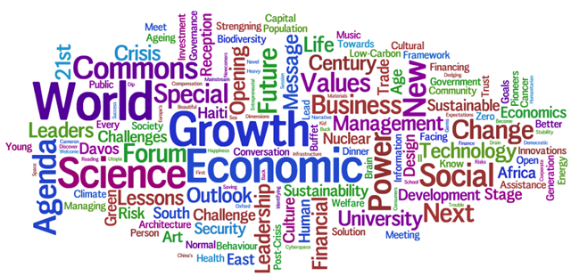
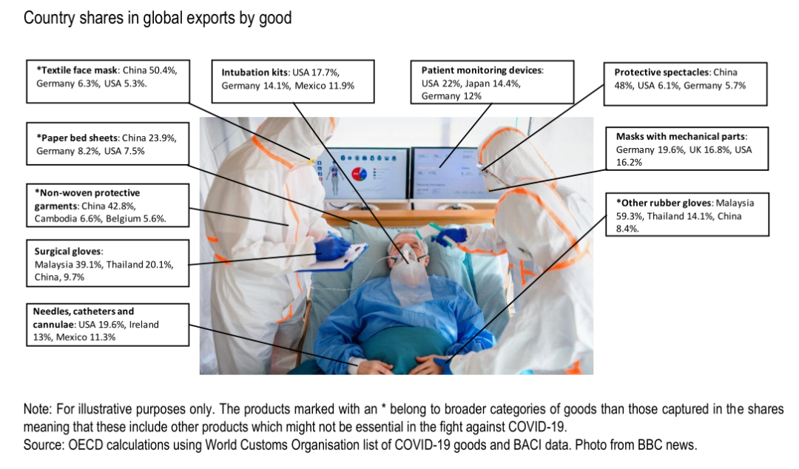
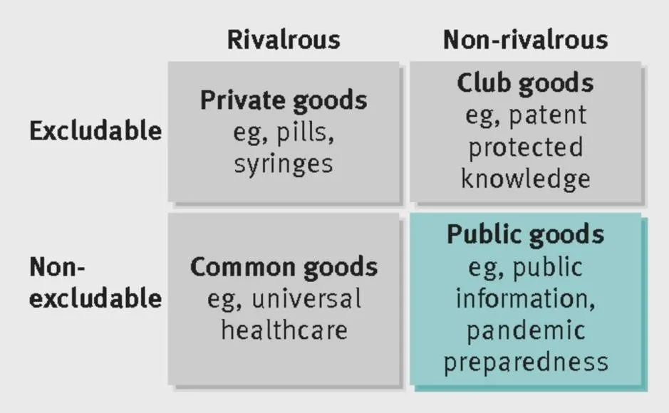

收录于合集

作品简介
【作者】 G. John Ikenberry，国际关系以及美国外交政策理论家，美国普林斯顿大学政治与国际关系学教授，韩国庆熙大学的全球卓越学者，并于2016年入选为美国文理科学院（American Academy of Arts and Sciences）成员。伊肯伯里以强烈批评布什政府的“新帝国主义大战略”（neoimperial grand strategy）而闻名，是一位较为典型的自由主义者。
【编译】 常佳艺（北京大学）
阮辰阳（复旦大学）
【校对】 姚寰宇
【审核】 赵怡雯
【排版】 卢奕财
【美编 】聂涵琳
【来源】 G. John Ikenberry, “The Next Liberal Order：The Age of Contagion Demands More Internationalism, Not Less”, Foreign Affairs , Vol.99, No.4, pp.133-142.
期刊简介
《外交事务》（Foreign Affairs），是由美国外交关系委员会（Council on Foreign Affairs）出版的双月刊，被认为是美国最具影响力的外交政策杂志之一。自1922年创刊以来，《外交事务》杂志发表了诸多开创性的文章，包括乔治·凯南1947年发表的《苏联行为的根源》（X Article），以及塞缪尔·亨廷顿1993年发表的《文明的冲突》（the Clash of Civilizations）等。根据2019年的期刊引文报告,该期刊的影响因子为3.775，在“国际关系”类别的95种期刊中排名第3。
下一个自由主义秩序： 大传染时代呼唤更多， 而非更少的国际主义
The Next Liberal Order:
The Age of Contagion Demands More Internationalism, Not Less
G. John Ikenberry
内容提要
新冠疫情的全球性蔓延暴露了自由主义世界秩序长期存在的漏洞，各国间沟通与合作的缺乏使得危机迟迟未得到有效控制。面临疫情造成的经济破坏与社会动荡，作者认为美国需要重塑自由主义世界秩序，不仅要重新领导各国在体现相互依存脆弱性的全球性问题上进行合作，还需注重应对在安全与政治经济领域来自其他大国的挑战。美国应“振作起来”（brace up）、及时扭转战略方向，并以20世纪30年代的“罗斯福改革”为参考，重塑一个开放、多边、以自由民主国家联盟为基础的自由主义世界秩序。
文章导读
01
新冠疫情、自由主义世界秩序的碎片化与美国的选择
早在新冠疫情爆发之前，自由主义世界秩序就呈现出崩溃的迹象：特朗普的上台使得自由主义秩序的首要赞助商美国将宏观战略重心转向大国竞争；美国开始主动放弃其在公共卫生、贸易、人权与环境保护等领域的自由主义世界秩序领导权；自由民主国家之间的分歧不断显现，逐渐失去合作缔造全球性规范的能力；其他国家对开放、法治、人权和自由民主等西方价值观也不再那么友好。这场疫情作为美国与其盟友在战后遇到的最严重的公共安全威胁与经济灾难，在将上述漏洞暴露出来的同时，成为了压垮自由主义世界秩序的最后一根稻草。
特朗普向自由主义世界秩序“开战”
（图源：http://ft.com/content/bec33c02-7de1-11e8-8e67-1e1a0846c475）
短期内，民族主义、大国竞争与战略脱钩将继续深化，而美国必须做出选择：要么放任以上态势的发展，放弃领导者的地位，停止为其他国家提供互利的理念与制度框架，正如当今的美国所实行的战略；要么借助疫情爆发的契机扭转方向，充分运用领导者在意识形态与制度设置方面的权力，重塑以民主国家联盟为基础，开放包容、促进合作的自由主义秩序。如果美国依然固执己见，美国将会更加衰落，同时国际秩序将回归到大国竞争的无政府状态中。因此，在后疫情时代，美国不能躲在自己的边界之内，而应以史为鉴，参考富兰克林·罗斯福政府创设自由主义世界秩序的经验重塑国际秩序。
02
**
**
现代性问题：自由主义国际秩序的弊端与成就
对于美国及其盟友而言，他们面临的最大挑战并非长期存在的大国竞争，而是所谓的“现代性问题”（the problems of modernity）。科技革新和工业创造所导致的深度全球性变革，将所有现代社会推入到一个日益复杂且相互连接的世界体系中。各国间的相互依存关系使气候变化、流行性疾病、金融危机、核扩散等危机能够轻松跨越国界，引发世界范围内的动荡。如今的新冠疫情便是跨国危机的范例，没有任何国家能够独善其身。

2010年达沃斯论坛的主要话题：科学技术，可持续发展，社会转型
（图源：https://cpatrendlines.com/2010/03/04/five-global-issues-you- can%E2%80%99t-ignore/）
与传统的威胁相比，跨国危机更加难以预测与管控，现代性的全球危机需要全球性的解决方案。过去的美国领导者意识到，跨国危机需要通过建立跨国联盟网络和国际多边机制予以解决。然而，这种努力遭到反对者的质疑：一方面，自由主义秩序在一定程度上要为金融危机与经济不平等的加剧负责；另一方面，自由主义秩序被认为是军事干预与战争的根源。随着一些国家未能按照美国期望以“负责任的利益相关者”（responsible stakeholder）身份融入自由主义秩序，自由主义愿景逐渐式微。
然而，尽管自由主义国际秩序存在弱点，但其反对者很难提出一个更好的替代方案。与其他替代方案相比，自由主义秩序具有独特的自我修正能力，这使其制度得以无限趋近于以自决、个人权利、经济安全与法治为特征的自由国际主义理想。事实上，这一体系确实带来了世界范围内的经济繁荣与发展，而和这些成就相比，任何缺点都相形见绌。马歇尔计划、欧盟的建立、日本与德国战后的转型、殖民统治的结束、G7集团对贸易与金融危机的成功管控、80年代以来亚非拉各国的对外开放，以及冷战的和平结束都得益于自由主义世界秩序。
因此，在这个混乱的年代，美国不能回避自己的责任，而应站出来领导他国，重塑自由主义世界秩序：一个自由民主国家能够合作共赢、共同管理脆弱性的环境。在这一环境中，美国及其盟友应在共同价值观的指导下加强信任，采取集体行动，在追求绝对收益的同时防范相互依存带来的脆弱性风险。
03
罗斯福革命：遗产与启示
罗斯福的自由国际主义是美国构建自由主义世界秩序的思想基础。我们可以将威尔逊时期的自由国际主义思想与之相比较：威尔逊及其同代人设想科技进步与工业创造必然为人类创造福祉，认为现代性力量自然通向自由民主，这一观点被后来的自由主义者引申为“历史的终结”；然而，鉴于科技进步与工业创造在二战时煽动了国际暴力与专制主义，罗斯福意识到现代性力量并不直接通向自由民主。因此，罗斯福的自由国际主义倡导消极捍卫民主生活方式而非积极传播民主观念。如今的全球流行病与罗斯福时代的大萧条有着若干相似之处，罗斯福这种针对艰难时代的自由国际主义，对今天的人们有着最直接的启示。
首先，罗斯福的核心想法是让自由民主的世界建立在一个更稳固的国内立足点上（solid domestic footing）。 在罗斯福所构想的战后国际秩序中，政府必须有能力为本国公民提供更好的社会保障。国内与国际的新政政策不能相互排斥，而应成为咬合的齿轮，通过“国内的新政”带动“世界的新政”（New Deal for the world）。
其次，罗斯福的愿景产生于对相互依赖与其脆弱性的清晰认知。 各国之间的相互依赖关系是一把双刃剑，在促进世界一体化与多边合作的同时亦会产生新的脆弱性。具有跨国传染性的危机不再仅局限于疾病，金融危机、保护主义、军备竞赛与战争都可以像传染病一样跨过边界、蔓延至世界的每个角落。强行切断各国的相互依赖不可行亦不可取，相关国家只能加强对它的管理。在罗斯福的提议下，国际协议、组织和机构等多边管理制度成为了国际秩序的核心，并为国际合作搭建框架。
第三，罗斯福重新定义了安全这一概念。 在美国，大萧条和新政带来了“社会安全”的概念，而第二次世界大战的暴力和破坏带来了“国家安全”的概念。社会安全着眼于内政，要求建立一个社会安全与保障网络，尽可能地减轻公民的风险；通过提前规划、政策协调与联盟构建来塑造安全的国际环境。无论是在国内还是国外，各国政府需要做更多的工作来完成社会安全和国家安全的双重目标。
最后，罗斯福国际主义的独特之处在于，它促进了发达的自由民主国家间的安全合作。 罗斯福时代的国际主义者将自由社会与安全伙伴关系看作同一枚政治硬币的两面，通过领导、塑造一个由国际机构、伙伴关系、扈从国（client states）与地区秩序（regional orders）组成的世界，美国与其民主国家的同伴形成了一个紧密的同盟，共同对抗苏联的威胁，而美国则是这一秩序的中心。
大师级建构者：罗斯福于华盛顿特区，1933年
罗斯福的创新与改革成功地塑造了二战后的自由主义世界秩序，并使得这一秩序保持了几十年的繁荣。当危机再次席卷世界时，当今的自由主义者必须借鉴罗斯福时代的经验以再度重建自由主义世界秩序。
04
俱乐部与购物中心：自由主义秩序的反思与重塑
苏联的解体与冷战的结束一度使得“历史终结”的乐观情绪蔓延西方，共同敌人的消失减轻了美国与其他自由民主国家的危机感，也因此削弱了美国与其盟友的合作基础与意愿。曾经围绕着共同的价值观念紧密合作、协调一致的“民主国家俱乐部”（the club of democracies）逐渐分崩离析，转变为一个庞大且无序的购物中心（shopping malls）,各国可以在其中挑选它们希望加入的国际制度与机制。由“俱乐部”向“购物中心”的演变一方面使得西方国家之间的联盟更加松散，另一方面使曾经被排除在俱乐部外的国家能够进入“购物中心”，在特定议题下与自由主义系统合作。在经济、政治与安全合作相互脱钩的背景下，这些国家能够在不把一整套责任、义务与价值观照单全收的同时，获取巨大的利益。中国与自由主义体系的互动却为美国带来了困惑，美国必须要从中吸取教训，对过去三十年来自由主义国际秩序的失败进行反思与修正。
首先，美国要积极重塑“民主国家俱乐部”。 在《大西洋宪章》精神的指导下，美国应同其他自由民主国家重新组建一个更加协调一致、功能更强的联盟。合作的范围不应仅仅局限于七国集团的盟友，更应酌情扩大范围，推动澳大利亚、韩国等发达民主国家成为新同盟的成员，以增强多边主义与自由原则在世界范围内的影响力。
其二，重塑后的“民主国家俱乐部”可以与以联合国为代表的多边国际组织共存，自由民主国家可以在国际多边机制内与其他国家开展特定议题的合作。 例如，在与政体类型无关的诸多跨国议题领域（包括军备控制、环境保护、全球公共产品管理与流行病防治），开放的国际合作是必需的。因此，“民主国家俱乐部”在人权、安全和政治经济等议题领域开展内部排外性合作的同时，也需要与联合国等多边组织共存、合作，以增强对国际秩序的控制能力。
多边主义的世界
（图源：https://www.project-syndicate.org/onpoint/reclaiming-multilateralism-by- dennis-j–snower-2018-06?barrier=accesspaylog）
其三，重建自由主义世界秩序的关键之一在于调和国际经济自由化与国内社会经济安全这一对矛盾。 二战结束后，“内嵌自由主义”（embedded liberalism）曾试图通过妥协，达成自由贸易、竞争与社会保护之间的平衡，但这一微妙的平衡很快随着冷战的结束而崩塌。近三十年来，随着全球化的飞速发展，各国间的贸易壁垒被进一步削弱。开放市场在提升效率的同时，也降低了主权国家对本国经济的控制力，无国界的贸易与投资超越了各国的社会保障体系，反全球化的声音在全世界各地兴起。为改变这一现状，自由民主国家需相互合作而非“以邻为壑”，以多边与非歧视的精神约束国际经济自由化的边界，从而管控其对国家社会经济安全的负面效应。
最后，重建自由主义世界秩序的另一关键点在于回应作为美国地缘政治竞争对手、与自由主义世界秩序有所出入的中俄两国。 可以预见，中美两国的竞争将最终归结于“哪一种模式更能推动人类进步”这一问题之上。中国提出了中国特色社会主义的发展模式，促使美国联合其他自由民主国家重建自由主义世界秩序予以应对。
05
结论：“振作起来”
面对自由秩序的衰退与弊病，美国不应放弃任何拯救自由秩序的努力，亦不应将大战略转向基于现实主义的大国竞争。独特的价值观与领导力使得美国在二十世纪有能力阐述一个开放的、后帝国主义世界体系的愿景，也使美国能够通过颁布多边规则和规范，放大其能力并使其权力合法化。转向大国竞争则意味着抛弃过往的成就与遗产。
除美国之外，没有任何一个大国能够鼓励世界各国围绕一个开放守序的愿景进行多边合作；但如果仅仅依靠美国的力量，同样难以支撑自由主义秩序。美国必须加强与其他自由国家的合作，同时“振作起来”，坚守其领导以及主导地位，以重塑自由主义世界秩序。
译者评述
** （一）愿景：新冠疫情冲击下美国需要重塑自由主义世界秩序**
新自由主义作为当今国际社会的主流思潮，发源于英美，冷战之后散布于世界，并深度嵌入了西方国内秩序和国际秩序，甚至一度被认为是“人类历史的终结”。然而，近三十年来，新自由主义的诸多局限性逐渐暴露，美国正在失去对自由主义理念的兴趣，欧盟的价值观受到重大冲击，而 新冠疫情则成为了压死骆驼的最后一根稻草，自由主义世界秩序的愈发碎片化。 美国前国务卿亨利·基辛格（Henry Kissinger）在《华尔街日报》撰写《新冠肺炎大流行将永远改变国际秩序》一文中，指出新冠疫情大流行给世界造成的影响是前所未见的，所引发的动荡会持续几代人，甚至导致国家间壁垒的再现。曾经的乐观情绪不复存在，越来越多的学者开始探讨，在后疫情时代，自由主义原则主导国际秩序将会何去何从。
有学者抱有较为悲观的观点，认为自由主义削弱边界，导致主权国家对于病毒的免疫能力被严重削弱。 新冠疫情有力地提醒我们，基本的政治和经济单位仍然是民族国家，危机之后的全球化进程将进一步衰退。 陆克文（Kevin Rudd）等诸多学者都指出， 国际社会的制度化合作程度将降低并向无领导状态过渡，[1]自由主义世界秩序将难以为继。 但，依然有学者对这一秩序充满信心，认为自由主义秩序在受到挑战，但人们并不需要抛弃自由主义模式。按照历史终结论的提出者，弗朗西斯·福山（Francis Fukuyama）的观点，面临公共危机时，国家能力是比政体更加重要的因素，抗疫的失败并不意味着政体的失败；自由主义秩序存在问题与矛盾，但这一矛盾并非无法解决。“民主、资本主义与美国以前已证明有能力进行变革与调试，而这次他们需要从帽子里再拿出一只兔子（pull a rabbit out of the hat once again）。”[2]
本文作者的观点显然更接近于后者，他明确地指出，尽管新冠疫情对自由主义秩序造成了冲击，但回顾历史，自由主义秩序所带来的成就远胜于其劣势，其优越性是毋庸置疑的。 危机既代表危险，亦代表机会，西方国家无需抛弃自由主义模式，而是借助这一机会，重拾社会责任、公共利益、对于相互依存关系的管控以及“民主国家俱乐部”的建设。 作者的观点并未仅仅停留在口号层面，而是提出了清晰明确的操作路径。在这一过程中，作者认为 美国必须要借鉴罗斯福时期的经验与遗产，及时放弃目前以大国竞争与战略脱钩为主题的大战略，并通过孤注一掷的努力实现转向，恢复与重塑开放、多边的国际秩序。 而在国际秩序转型与重构的过程中，美国应该“振作起来”，站在舞台中央协助整个世界实现民主、自由市场、个体主义以及法治等西方价值观。
然而，尽管存在诸多的相似之处，但与罗斯福新政时期相比，社会环境与国际秩序发生了非常巨大的变化，罗斯福时期留下来的思想与遗产在多大程度上能够应用于后疫情时代、作者的构想是否具有足够的可行性、美国是否仍有充分的领导力建立新同盟，均需要时间的进一步验证。但毋庸置疑的是，新冠疫情暴露了新自由主义政体的局限，新自由主义原则主导的国际秩序也将不可避免地继续衰落，疫情将重塑国际秩序与权力格局。在后疫情时代，国际秩序将更加多元，不同发展路径之间的竞争将为未来的国际秩序带来新的不确定性。
** ** （二）现实：新冠疫情暗示国际秩序的不可逆转变****
本文最大的问题在于对新冠疫情于国际秩序影响的讨论浅尝辄止,反而老调重弹自由主义系统的团结。根据作者的论述，自由主义世界秩序有两大组成部分：第一，在与政体类型无关的全球治理领域倡导开放性的国际多边机制；第二，在自由民主国家与其他国家的利益与价值观冲突的领域（例如人权与国家安全领域）建立排他性的自由主义系统联盟。新冠疫情是一种跨国威胁，属于全球性问题；新冠疫情背景下医疗用品的生产与贸易也受制于既成的全球产业链，因此各国在处置新冠疫情方面是相互依存的；因而，提供足量国际公共产品供给以应对相互依存导致的全球性问题才是关键所在。就美国利益而言，新冠疫情是在上述自由主义世界秩序的第一层含义上提醒美国，需要通过主导国际公共产品供给的方式，建立跨国多边机制以巩固自由主义世界秩序的领导权。然而，文中所谓美国应捍卫自由主义世界秩序中自由民主等价值观，以及对“中国威胁”的描述，使论述完全偏向自由主义世界秩序的第二层含义，而这些均与新冠疫情没有关联。因而，实际上本文变成了“借新冠疫情这一热点重申符合美国狭隘利益的、意识形态化的自由主义系统宣言”。
以下，我将围绕新冠疫情与国际秩序两个关键词，对新冠疫情之于国际秩序的影响表达自身见解。
一方面，新冠疫情在全球的蔓延揭露了两大事态：全球国际公共产品供给不足的现状以及国家能力对国际公共产品供给的影响。 此次疫情导致全球个人防护装备（包括口罩、医用手套与医疗服）需求激增，供给呈现严重不足的情况，仅美国国内N95口罩月供给缺口就达2.9亿只，占总需求量的72%；[3]而且，关税壁垒与出口限额进一步阻塞了产品供给的分配。针对以上现状，中国在解决这一全球性问题上具有更强大的供给能力。[4]据统计，2018年，中国分别占全球口罩、医用手套与防护服出口额的50.4%、9.7%与41.0%，其中口罩与防护服出口额世界第一，医用手套出口额世界第三；相比之下，美国仅占全球口罩出口额的5.3%，位列世界第三，其医用手套与防护服的出口额占比甚至未进入前三。[5]因此，在与此次疫情有关的个人防护装备方面，中国是最主要的装备出口国。这表明国家能力（以生产力为表现）对一国处置新冠疫情及提供国际公共产品能力的重要作用，而这一点却被本文忽视。

2018年特定医疗物资的主要出口商
（图源：OECD. 2020. Trade interdependencies in COVID-19 goods, May 5. Paris: OECD, p.5.）
另一方面，新冠疫情既提示了美国领导国际秩序正当性的根基正受到动摇，也暗示了国际秩序可能将发生根本性转变。 在这里需要首先明确的是，国际秩序受到新冠疫情影响只可能转变而不可能瓦解（本文在这一点上与评述者达成共识）。自由贸易与海外投资让位于贸易保护主义与经济民族主义，如此“以邻为壑”的国际无秩序之所以不可能，是因为全球化带来的相互依存使得任何一个国家都无法仅凭自身资源与生产能力抗击疫情。在此基础上，我们再来讨论国际秩序的可能性演变。
美国领导自由主义世界秩序的正当性主要来源于三方面因素：硬权力、软权力与外源压力。第一，硬权力作为美国维持国际秩序的权力基础，其重要性不言而喻。此类权力主要体现在军事实力、经济实力以及结构性权力之上，属于物质性权力。第二，软权力意谓一国在文化、意识形态与制度方面的吸引力，美国在自由主义世界秩序中强调开放、法治、人权与自由民主的价值观，就是一种软权力，特别是一种意识形态权力的运用。美国应用意识形态权力的目的，是使其盟友自愿服从于美国的领导，从而合理化美国对安全、生产、金融、知识等领域的支配权并获得领导者的声誉与威望。[6]第三，美国需要外源压力才能合法化其主导的自由主义世界秩序，压力的大小与性质可能会影响其主导自由主义世界秩序的效果。回顾历史，在二战及战后自由主义世界秩序的初创阶段，美国所面临的外源压力是破坏和平的极权主义与经济相互依存所致的脆弱性，因此在美国主导下建立了UN、WB、IMF与GATT以保障国际和平与经济稳定；冷战时期，美国受到苏联集团施加的外源压力，得以巩固自由主义系统内部进行结盟，从而使自由主义世界秩序走向成熟；后冷战初期，苏联的突然解体使美国成为唯一的超级大国，在失去外源压力的情况下，国际合作正如本文所言呈现出人文、经济与安全领域的“分类清算”，各国都可以自主选择专门性的国际合作机制，自由主义世界秩序开始分崩离析；近十年，随着中国与俄罗斯等国的崛起，美国及其盟友再次受到外源压力，促使本文作者强调在压力之下美国重塑自由主义世界秩序的必要性。
然而， 美国是否能够继续承担自由主义世界秩序的领导者责任，关键在于它是否有足够的领导能力与意愿。 霸权国家能力与意愿的衰退符合“霸权自耗、霸权必衰”的规律，这一规律由以下三点所致：第一，市场竞争机制下经济力量的格局变化要求对政治权利进行再分配；第二，随着产品数量增加，单位公共产品的边际收益递减而边际成本递增；第三，霸权国必须忍受其他国家的“搭便车”行为。[7]因此，新兴国家的经济发展导致对国际权力地位重新分配的要求、美国承担公共产品供给的边际效益递减以及美国日益无法忍受盟友或其他国家利用国际制度“搭便车”的行为（例如盟友不承担应有的防务责任），这些因素都将降低美国的领导能力与意愿。当前美国退出一些国际组织的举动，尤其是退出世界卫生组织的行为，正是其领导能力与意愿下降的反映。

医疗作为“全球公共产品”
（图源：https://www.bmj.com/content/358/bmj.j3397）
若美国领导自由主义世界秩序的能力与意愿持续衰退，国际秩序将会发生系统性转变。 从权力均衡而言将是单极向多极的转变，而从国际秩序而言对应的是从全球性霸权稳定到区域性后霸权合作的转变。霸权与合作之间的关系既非充分也非必要，后霸权时代的合作也是可能的。理论上，在集体行动理论中，虽然在大集团中每个成员都不愿承担公共产品的供应，但在小集团情况下，每一个成员可以通过行为监督、战略互动与重复囚徒困境博弈来培育合作，共同提供公共产品。[8]现实中，20世纪70年代发达消费国建立的国际能源机构对于石油储备的非正式安排，就是后霸权时代发达经济体合作的典型案例之一。当前中国在国际疫情防控上也与一些国家和地区达成合作意向，例如成功举办东盟与中日韩（10+3）抗击新冠肺炎疫情领导人特别会议与中拉应对新冠肺炎疫情特别外长视频会，都是特定议题内区域合作的体现。
综上，新冠疫情对国际秩序的启示在于，国际秩序的领导者需要有供给公共产品能力与意愿，而承担领导责任的，既可以是全球性霸权国家，也可以是在特定区域与议题范围内相互合作的非霸权大国集体。
**
**
参考文献
[1] Kevin Rudd, “The Coming Post-COVID Anarchy,” Foreign affairs , May 6, 2020, https://www.foreignaffairs.com/articles/united-states/2020-05-06/coming- post-covid-anarchy.
[2] Francis Fukuyama, “The Pandemic and Political Order,” Foreign affairs , Vol.99, No.4, pp.26-32.
[3] Austen Hufford, “3M CEO on N95 masks: ‘Demand exceeds our production capacity’,” Wall Street Journal, April 2, 2020, https://www.wsj.com/articles/3m-ceo-on-n95-masks-demand-exceeds-our- production-capacity-11585842928.
[4] Gary Gereffi, “What does the COVID-19 pandemic teach us about global value chains? The case of medical supplies,” Journal of International Business Policy , Vol.3, No.3, pp.287-301.
[5] OECD, “Trade interdependencies in COVID-19 goods,” May 5, 2020, http://www.oecd.org/coronavirus/policy-responses/trade-interdependencies-in- covid-19-goods-79aaa1d6/#figure-d1e578.
[6] 罗伯特·基欧汉著，苏长和等译：《霸权之后：世界政治经济中的合作与纷争》，上海：上海人民出版社2001年版，第52页。
[7] 樊勇明等：《西方国际政治经济学》（第三版），上海：上海人民出版社2017年版，第53-55页。
[8] 罗伯特·基欧汉著，苏长和等译：《霸权之后：世界政治经济中的合作与纷争》，上海：上海人民出版社2001年版，第93页。
文章观点不代表本平台观点，本平台评译分享的文章均出于专业学习之用, 不以任何盈利为目的，内容主要呈现对原文的介绍，原文内容请通过各高校购买的数据库自行下载
**
**
**
**
**
**
添加 “国小政”微信
获取最新资讯


国政学人
支持学术公益与知识传播
微信扫一扫赞赏作者 __赞赏
已喜欢，对作者说句悄悄话
取消 __
发送给作者
发送
最多40字，当前共字
上一页 1/3 下一页
长按二维码向我转账
支持学术公益与知识传播
受苹果公司新规定影响，微信 iOS 版的赞赏功能被关闭，可通过二维码转账支持公众号。